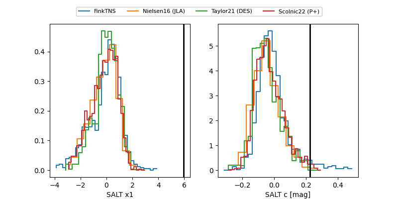

FINK: ZTF25abqiivp
Lasair: ZTF25abqiivp
ALeRCE: ZTF25abqiivp
ZTF25abqiivp (ztf,fink)
equatorial (ra, dec) = (262.9608,+16.38011)
galactic (l, b) = (39.3881,+24.78480)

last ztfg=20.35, ztfr=20.07
2 ztfg, 1 ztfr detections